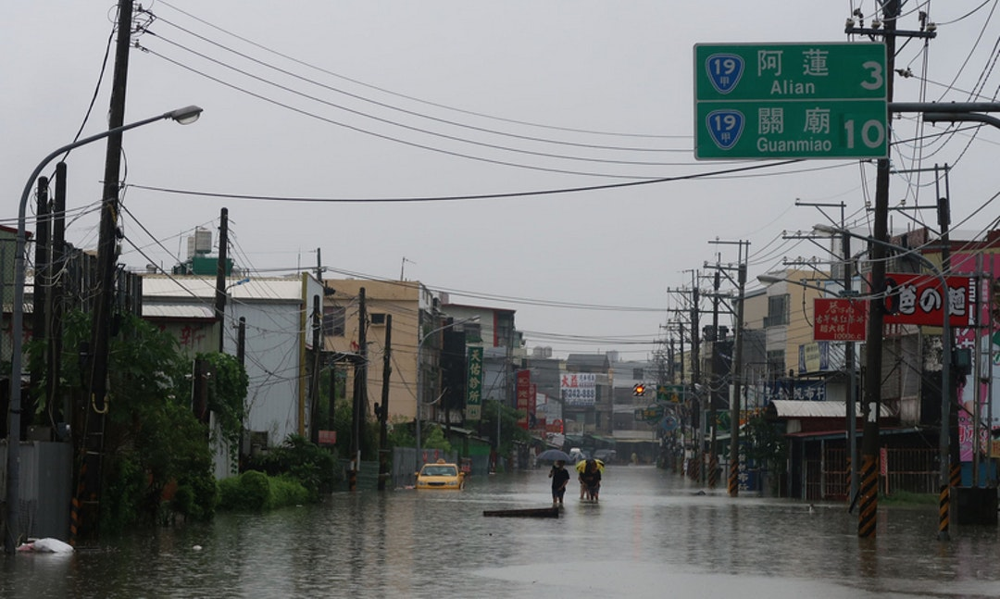

影響:
本次豪雨事件造成2人死亡、4人受傷、1人失蹤。據水利署統計共有1545筆通報淹水災點，水保局統計坡地災點數共66筆，據農委會統計共造成8億7,199萬元的農業損失。
原因:
行政院的報告中指出，過去台灣建置的區域排水只有10年重現期的保護標準（10年內最大雨量為標準，亦即24小時內雨量約為250至300毫米），但823強降雨的雨量，部分地區都超過500毫米，遠超過區域排水系統的設計保護標準，排水系統排除不及，低窪地區因外水壅高內水無法排出，加上適逢農曆14～16日的大潮，可重力排水時間極短，退水不易。此外，淹水時間長的地區坐落於歷年來的主要地層下陷區，顯示出長期地地層下陷，造成局部地區排水困難。
改善:

1.水利署審通過「急待辦理之排水改善工作」，包括豪雨成災的雲林縣、嘉義縣、台南市、高雄市及屏東縣，對此針對淹水較嚴重之瓶頸渠段進行改善工作。2.推動「逕流分擔及出流管制」，藉由土地與水道共同分擔降雨，增加土地耐淹能力，減少洪災威脅及損失。
3.推動智慧水利防災，透過「監控、預警、通報及應變」（例如藉感測元件及通訊技術掌握降雨與水位資訊，配合即時淹水預警模式與大數據分析），提高防災效率，強化現有的防災體系。